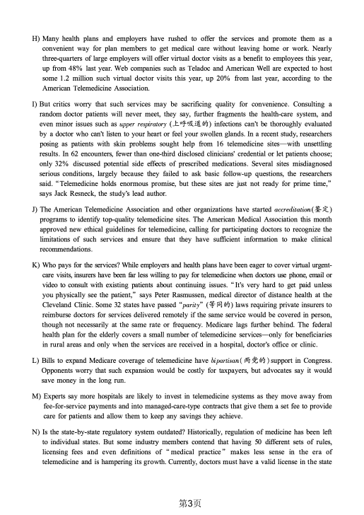
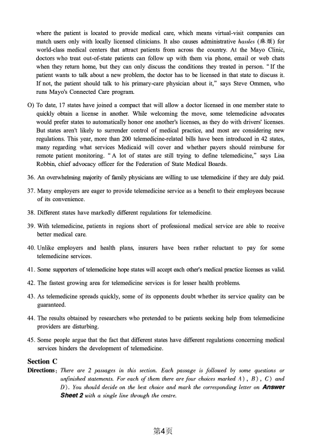
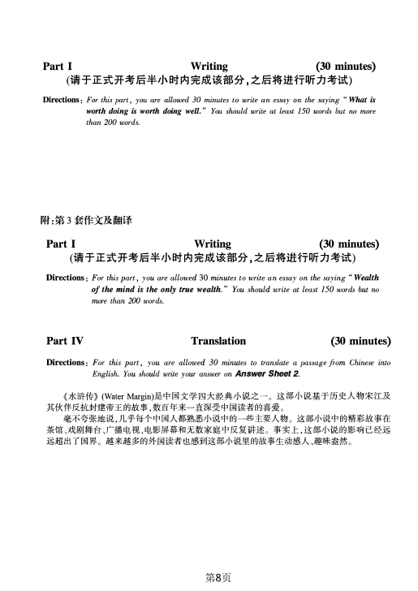

第 1 / 8 页

Part II
Listening Comprehension
(30 minutes)
�<<<<<<<<<<<<<<<<<<<<<<<<<<<<<<<<<<<<<<<<<<<<<<<<<<<<<<<<<<<<<<<<<<<<�
ÿ
Ā §31J i8 a�
�
ࠓ
ࠔ
¶ 2020 · 9 ¸ ,&²-³P]rjJ , ffi=³PJrjJiit´ !::jffi-³-jj( µ
V
A
".)>>>>>>>>>>>>>>>>>>>>>>>>>>>>>>>>>>>>>>>>>>>>>>>>>>>>>>>>>>>>>>>>>>>>,�
Part III
Reading Comprehension
( 40 minutes)
Section A
Directions : In this section , there is a passage with ten blanks. You are required to select one word for
each blank from a list of choices given in a word bank following the passage. Read the
passage through carefully before making your choices. Each choice in the bank is identified
by a letter. Please mark the corresponding letter for each item on Answer Sheet 2 with a
single line through the centre. You may not use any of the words in the bank more than once.
It was perhaps when my parents-who also happen to be my housemates-left to go travelling
for a couple of months recently that it
26
on me why I had not yet left the family home.
It wasn't that I relied on them for
27
reasons, or to keep my life in order, or to ease the
chaos of the home. These days, I rely on them for their company.
I missed coming home and talking about my day at work, and I missed being able to read their
faces and sense how their day was. I missed having unique
28
into tiny details that make a life.
While the conversation about young adults staying longer at home is
29
by talk of laziness,
of dependence, of an inability for young people to pull themselves together,
30
do we talk of the
way, in my case at least, my relationship with my parents has
3 1
strengthened the longer we
have lived together.
Over the years the power dynamic has changed and is no longer defined by one being the giver
and another, the taker. So, what does this say for our relationships within the family home?
According to psychologist Sabina Read, there are " some very positive possible
32
when
adult children share the family home" , noting the " parent-child relationship may indeed strengthen
and mature" in the process.
But, she notes, a strong
33
doesn't simply come with time. " The many changing factors of
the relationship need to be acknowledged, rather than hoping that the mere passage of time will
34
connect parents to their adult children. It's important to acknowledge that the relationship parameters
have changed to avoid falling back into
35
from the teen years."
A)
bond
I)
magically
B)
contemplated
J)
outcomes
C)
dawned
K)
patterns
D)
hierarchy
L)
rarely
E)
insight
M) saturated
F)
legislative
N)
stereotypes
G)
leverage
0)
undoubtedly
H)
logistical
2020年9月英语六级考试试题第2、3套
第1页
查看 / 复制本页文字
本页源文件的文字编码有异常。原卷显示正常；复制文字需对照原卷核查。
Part II Listening Comprehension (30 minutes) �<<<<<<<<<<<<<<<<<<<<<<<<<<<<<<<<<<<<<<<<<<<<<<<<<<<<<<<<<<<<<<<<<<<<� ÿ Ā §31J i8 a� � ࠓ ࠔ ¶ 2020 · 9 ¸ ,&²-³P]rjJ , ffi=³PJrjJiit´ !::jffi-³-jj( µ V A ".)>>>>>>>>>>>>>>>>>>>>>>>>>>>>>>>>>>>>>>>>>>>>>>>>>>>>>>>>>>>>>>>>>>>>,� Part III Reading Comprehension ( 40 minutes) Section A Directions : In this section , there is a passage with ten blanks. You are required to select one word for each blank from a list of choices given in a word bank following the passage. Read the passage through carefully before making your choices. Each choice in the bank is identified by a letter. Please mark the corresponding letter for each item on Answer Sheet 2 with a single line through the centre. You may not use any of the words in the bank more than once. It was perhaps when my parents-who also happen to be my housemates-left to go travelling for a couple of months recently that it 26 on me why I had not yet left the family home. It wasn't that I relied on them for 27 reasons, or to keep my life in order, or to ease the chaos of the home. These days, I rely on them for their company. I missed coming home and talking about my day at work, and I missed being able to read their faces and sense how their day was. I missed having unique 28 into tiny details that make a life. While the conversation about young adults staying longer at home is 29 by talk of laziness, of dependence, of an inability for young people to pull themselves together, 30 do we talk of the way, in my case at least, my relationship with my parents has 3 1 strengthened the longer we have lived together. Over the years the power dynamic has changed and is no longer defined by one being the giver and another, the taker. So, what does this say for our relationships within the family home? According to psychologist Sabina Read, there are " some very positive possible 32 when adult children share the family home" , noting the " parent-child relationship may indeed strengthen and mature" in the process. But, she notes, a strong 33 doesn't simply come with time. " The many changing factors of the relationship need to be acknowledged, rather than hoping that the mere passage of time will 34 connect parents to their adult children. It's important to acknowledge that the relationship parameters have changed to avoid falling back into 35 from the teen years." A) bond I) magically B) contemplated J) outcomes C) dawned K) patterns D) hierarchy L) rarely E) insight M) saturated F) legislative N) stereotypes G) leverage 0) undoubtedly H) logistical 2020年9月英语六级考试试题第2、3套 第1页
第 2 / 8 页
Section B
Directions : In this section , you are going to read a passage with ten statements attached to it. Each
statement contains information given in one of the paragraphs. Identify the paragraph from
which the information is derived. You may choose a paragraph more than once. Each
paragraph is marked with a letter. Answer the questions by marking the corresponding letter
on Answer Sheet 2.
How Telemedicine Is Transforming Healthcare
A) After years of big promises, telemedicine is finally living up to its potential. Driven by faster
internet connections, ubiquitous ( J"G 51-1:. ࠕ ;(£ aJ.i ) smartphones and changing insurance standards,
more health providers are turning to electronic communications to do their jobs-and it's
dramatically changing the delivery of healthcare.
B) Doctors are linking up with patients by phone, email and webcam ( Wl M}. .fl.1ࠖ ࠗ) . They're also
consulting with each other electronically-sometimes to make split-second decisions on heart attacks
and strokes. Patients, meanwhile, are using new devices to relay their blood pressure, heart rate and
other vital signs to their doctors so they can manage chronic conditions at home. Telemedicine also
allows for better care in places where medical expertise is hard to come by. Five to 10 times a day,
Doctors Without Borders relays questions about tough cases from its physicians in Niger, South Sudan
and elsewhere to its network of 280 experts around the world, and back again via internet.
C) As a measure of how rapidly telemedicine is spreading, consider: More than 15 million Americans
received some kind of medical care remotely last year, according to the American Telemedicine
Association, a trade group, which expects those numbers to grow by 30% this year.
D) None of this is to say that telemedicine has found its way into all comers of medicine. A recent
survey of 500 tech-savvy( tk:iiAi࠘ aJ.i ) consumers found that 39% hadn't heard of telemedicine,
and of those who haven't used it, 42% said they preferred in-person doctor visits. In a poll of
1 ,500 family physicians, only 15% had used it in their practices-but 90% said they would if it
were appropriately reimbursed ( ;f, H4£ ) .
E) What's more, for all the rapid growth, significant questions and challenges remain. Rules defining
and regulating telemedicine differ widely from state to state. Physicians groups are issuing
different guidelines about what care they consider appropriate to deliver and in what form.
F) Some critics also question whether the quality of care is keeping up with the rapid expansion of
telemedicine. And there's the question of what services physicians should be paid for: Insurance
coverage varies from health plan to health plan, and a big federal plan covers only a narrow range
of services. Telemedicine's future will depend on how-and whether-regulators, providers, payers
and patients can address these challenges. Here's a closer look at some of these issues:
G) Do patients trade quality for convenience? The fastest-growing services in telemedicine connect
consumers with clinicians they've never met for a phone, video or email visit-on-demand, 24/7.
Typically, these are for nonemergency issues such as colds, flu, ear-aches and skin rashes, and
they cost around $45, compared with approximately $ 100 at a doctor's office, $ 160 at an
urgent-care clinic or $ 750 and up at an emergency room.
第2页
查看 / 复制本页文字
Section B Directions : In this section , you are going to read a passage with ten statements attached to it. Each statement contains information given in one of the paragraphs. Identify the paragraph from which the information is derived. You may choose a paragraph more than once. Each paragraph is marked with a letter. Answer the questions by marking the corresponding letter on Answer Sheet 2. How Telemedicine Is Transforming Healthcare A) After years of big promises, telemedicine is finally living up to its potential. Driven by faster internet connections, ubiquitous ( J"G 51-1:. ࠕ ;(£ aJ.i ) smartphones and changing insurance standards, more health providers are turning to electronic communications to do their jobs-and it's dramatically changing the delivery of healthcare. B) Doctors are linking up with patients by phone, email and webcam ( Wl M}. .fl.1ࠖ ࠗ) . They're also consulting with each other electronically-sometimes to make split-second decisions on heart attacks and strokes. Patients, meanwhile, are using new devices to relay their blood pressure, heart rate and other vital signs to their doctors so they can manage chronic conditions at home. Telemedicine also allows for better care in places where medical expertise is hard to come by. Five to 10 times a day, Doctors Without Borders relays questions about tough cases from its physicians in Niger, South Sudan and elsewhere to its network of 280 experts around the world, and back again via internet. C) As a measure of how rapidly telemedicine is spreading, consider: More than 15 million Americans received some kind of medical care remotely last year, according to the American Telemedicine Association, a trade group, which expects those numbers to grow by 30% this year. D) None of this is to say that telemedicine has found its way into all comers of medicine. A recent survey of 500 tech-savvy( tk:iiAi࠘ aJ.i ) consumers found that 39% hadn't heard of telemedicine, and of those who haven't used it, 42% said they preferred in-person doctor visits. In a poll of 1 ,500 family physicians, only 15% had used it in their practices-but 90% said they would if it were appropriately reimbursed ( ;f, H4£ ) . E) What's more, for all the rapid growth, significant questions and challenges remain. Rules defining and regulating telemedicine differ widely from state to state. Physicians groups are issuing different guidelines about what care they consider appropriate to deliver and in what form. F) Some critics also question whether the quality of care is keeping up with the rapid expansion of telemedicine. And there's the question of what services physicians should be paid for: Insurance coverage varies from health plan to health plan, and a big federal plan covers only a narrow range of services. Telemedicine's future will depend on how-and whether-regulators, providers, payers and patients can address these challenges. Here's a closer look at some of these issues: G) Do patients trade quality for convenience? The fastest-growing services in telemedicine connect consumers with clinicians they've never met for a phone, video or email visit-on-demand, 24/7. Typically, these are for nonemergency issues such as colds, flu, ear-aches and skin rashes, and they cost around $45, compared with approximately $ 100 at a doctor's office, $ 160 at an urgent-care clinic or $ 750 and up at an emergency room. 第2页
第 3 / 8 页

H) Many health plans and employers have rushed to offer the services and promote them as a
convenient way for plan members to get medical care without leaving home or work. Nearly
three-quarters of large employers will offer virtual doctor visits as a benefit to employees this year,
up from 48% last year. Web companies such as Teladoc and American Well are expected to host
some 1 .2 million such virtual doctor visits this year, up 20% from last year, according to the
American Telemedicine Association.
I) But critics worry that such services may be sacrificing quality for convenience. Consulting a
random doctor patients will never meet, they say, further fragments the health-care system, and
even minor issues such as upper respiratory (J:.'1'-?&..ilę) infections can't be thoroughly evaluated
by a doctor who can't listen to your heart or feel your swollen glands. In a recent study, researchers
posing as patients with skin problems sought help from 16 telemedicine sites-with unsettling
results. In 62 encounters, fewer than one-third disclosed clinicians' credential or let patients choose;
only 32% discussed potential side effects of prescribed medications. Several sites misdiagnosed
serious conditions, largely because they failed to ask basic follow-up questions, the researchers
said. " Telemedicine holds enormous promise, but these sites are just not ready for prime time,"
says Jack Resneck, the study's lead author.
J) The American Telemedicine Association and other organizations have started accreditation (࠙ft:)
programs to identify top-quality telemedicine sites. The American Medical Association this month
approved new ethical guidelines for telemedicine, calling for participating doctors to recognize the
limitations of such services and ensure that they have sufficient information to make clinical
recommendations.
K) Who pays for the services? While employers and health plans have been eager to cover virtual urgent
care visits, insurers have been far less willing to pay for telemedicine when doctors use phone, email or
video to consult with existing patients about continuing issues. " It's very hard to get paid unless
you physically see the patient," says Peter Rasmussen, medical director of distance health at the
Cleveland Clinic. Some 32 states have passed "parity" (ࠚ ̀ ę) laws requiring private insurers to
reimburse doctors for services delivered remotely if the same service would be covered in person,
though not necessarily at the same rate or frequency. Medicare lags further behind. The federal
health plan for the elderly covers a small number of telemedicine services-only for beneficiaries
in rural areas and only when the services are received in a hospital, doctor's office or clinic.
L) Bills to expand Medicare coverage of telemedicine have bipartisan( i1fJ ,Jt ę ) support in Congress.
Opponents worry that such expansion would be costly for taxpayers, but advocates say it would
save money in the long run.
M) Experts say more hospitals are likely to invest in telemedicine systems as they move away from
fee-for-service payments and into managed-care-type contracts that give them a set fee to provide
care for patients and allow them to keep any savings they achieve.
N) Is the state-by-state regulatory system outdated? Historically, regulation of medicine has been left
to individual states. But some industry members contend that having 50 different sets of rules,
licensing fees and even definitions of " medical practice " makes less sense in the era of
telemedicine and is hampering its growth. Currently, doctors must have a valid license in the state
第3页
查看 / 复制本页文字
H) Many health plans and employers have rushed to offer the services and promote them as a convenient way for plan members to get medical care without leaving home or work. Nearly three-quarters of large employers will offer virtual doctor visits as a benefit to employees this year, up from 48% last year. Web companies such as Teladoc and American Well are expected to host some 1 .2 million such virtual doctor visits this year, up 20% from last year, according to the American Telemedicine Association. I) But critics worry that such services may be sacrificing quality for convenience. Consulting a random doctor patients will never meet, they say, further fragments the health-care system, and even minor issues such as upper respiratory (J:.'1'-?&..ilę) infections can't be thoroughly evaluated by a doctor who can't listen to your heart or feel your swollen glands. In a recent study, researchers posing as patients with skin problems sought help from 16 telemedicine sites-with unsettling results. In 62 encounters, fewer than one-third disclosed clinicians' credential or let patients choose; only 32% discussed potential side effects of prescribed medications. Several sites misdiagnosed serious conditions, largely because they failed to ask basic follow-up questions, the researchers said. " Telemedicine holds enormous promise, but these sites are just not ready for prime time," says Jack Resneck, the study's lead author. J) The American Telemedicine Association and other organizations have started accreditation (࠙ft:) programs to identify top-quality telemedicine sites. The American Medical Association this month approved new ethical guidelines for telemedicine, calling for participating doctors to recognize the limitations of such services and ensure that they have sufficient information to make clinical recommendations. K) Who pays for the services? While employers and health plans have been eager to cover virtual urgent care visits, insurers have been far less willing to pay for telemedicine when doctors use phone, email or video to consult with existing patients about continuing issues. " It's very hard to get paid unless you physically see the patient," says Peter Rasmussen, medical director of distance health at the Cleveland Clinic. Some 32 states have passed "parity" (ࠚ ̀ ę) laws requiring private insurers to reimburse doctors for services delivered remotely if the same service would be covered in person, though not necessarily at the same rate or frequency. Medicare lags further behind. The federal health plan for the elderly covers a small number of telemedicine services-only for beneficiaries in rural areas and only when the services are received in a hospital, doctor's office or clinic. L) Bills to expand Medicare coverage of telemedicine have bipartisan( i1fJ ,Jt ę ) support in Congress. Opponents worry that such expansion would be costly for taxpayers, but advocates say it would save money in the long run. M) Experts say more hospitals are likely to invest in telemedicine systems as they move away from fee-for-service payments and into managed-care-type contracts that give them a set fee to provide care for patients and allow them to keep any savings they achieve. N) Is the state-by-state regulatory system outdated? Historically, regulation of medicine has been left to individual states. But some industry members contend that having 50 different sets of rules, licensing fees and even definitions of " medical practice " makes less sense in the era of telemedicine and is hampering its growth. Currently, doctors must have a valid license in the state 第3页
第 4 / 8 页

where the patient is located to provide medical care, which means virtual-visit companies can
match users only with locally licensed clinicians. It also causes administrative hassles (fef..;l:ࠛi) for
world-class medical centers that attract patients from across the country. At the Mayo Clinic,
doctors who treat out-of-state patients can follow up with them via phone, email or web chats
when they return home, but they can only discuss the conditions they treated in person. " If the
patient wants to talk about a new problem, the doctor has to be licensed in that state to discuss it.
If not, the patient should talk to his primary-care physician about it," says Steve Ommen, who
runs Mayo's Connected Care program.
0) To date, 17 states have joined a compact that will allow a doctor licensed in one member state to
quickly obtain a license in another. While welcoming the move, some telemedicine advocates
would prefer states to automatically honor one another's licenses, as they do with drivers' licenses.
But states aren't likely to surrender control of medical practice, and most are considering new
regulations. This year, more than 200 telemedicine-related bills have been introduced in 42 states,
many regarding what services Medicaid will cover and whether payers should reimburse for
remote patient monitoring. " A lot of states are still trying to define telemedicine," says Lisa
Robbin, chief advocacy officer for the Federation of State Medical Boards.
36. An overwhehning majority of family physicians are willing to use telemedicine if they are duly paid.
3 7. Many employers are eager to provide telemedicine service as a benefit to their employees because
of its convenience.
38. Different states have markedly different regulations for telemedicine.
39. With telemedicine, patients in regions short of professional medical service are able to receive
better medical care.
40. Unlike employers and health plans, insurers have been rather reluctant to pay for some
telemedicine services.
41 . Some supporters of telemedicine hope states will accept each other's medical practice licenses as valid.
42. The fastest growing area for telemedicine services is for lesser health problems.
43. As telemedicine spreads quickly, some of its opponents doubt whether its service quality can be
guaranteed.
44. The results obtained by researchers who pretended to be patients seeking help from telemedicine
providers are disturbing.
45. Some people argue that the fact that different states have different regulations concerning medical
services hinders the development of telemedicine.
Section C
Directions : There are 2 passages in this section. Each passage is followed by some questions or
unfinished statements. For each of them there are four choices marked A ) , B ) , C) and
D ) . You should decide on the best choice and mark the corresponding letter on Answer
Sheet 2 with a single line through the centre.
---
第4页
查看 / 复制本页文字
where the patient is located to provide medical care, which means virtual-visit companies can match users only with locally licensed clinicians. It also causes administrative hassles (fef..;l:ࠛi) for world-class medical centers that attract patients from across the country. At the Mayo Clinic, doctors who treat out-of-state patients can follow up with them via phone, email or web chats when they return home, but they can only discuss the conditions they treated in person. " If the patient wants to talk about a new problem, the doctor has to be licensed in that state to discuss it. If not, the patient should talk to his primary-care physician about it," says Steve Ommen, who runs Mayo's Connected Care program. 0) To date, 17 states have joined a compact that will allow a doctor licensed in one member state to quickly obtain a license in another. While welcoming the move, some telemedicine advocates would prefer states to automatically honor one another's licenses, as they do with drivers' licenses. But states aren't likely to surrender control of medical practice, and most are considering new regulations. This year, more than 200 telemedicine-related bills have been introduced in 42 states, many regarding what services Medicaid will cover and whether payers should reimburse for remote patient monitoring. " A lot of states are still trying to define telemedicine," says Lisa Robbin, chief advocacy officer for the Federation of State Medical Boards. 36. An overwhehning majority of family physicians are willing to use telemedicine if they are duly paid. 3 7. Many employers are eager to provide telemedicine service as a benefit to their employees because of its convenience. 38. Different states have markedly different regulations for telemedicine. 39. With telemedicine, patients in regions short of professional medical service are able to receive better medical care. 40. Unlike employers and health plans, insurers have been rather reluctant to pay for some telemedicine services. 41 . Some supporters of telemedicine hope states will accept each other's medical practice licenses as valid. 42. The fastest growing area for telemedicine services is for lesser health problems. 43. As telemedicine spreads quickly, some of its opponents doubt whether its service quality can be guaranteed. 44. The results obtained by researchers who pretended to be patients seeking help from telemedicine providers are disturbing. 45. Some people argue that the fact that different states have different regulations concerning medical services hinders the development of telemedicine. Section C Directions : There are 2 passages in this section. Each passage is followed by some questions or unfinished statements. For each of them there are four choices marked A ) , B ) , C) and D ) . You should decide on the best choice and mark the corresponding letter on Answer Sheet 2 with a single line through the centre. --- 第4页
第 5 / 8 页
Passage One
Questions 46 to 50 are based on the following passage.
Danielle Steel, the 71-year-old romance novelist is notoriously productive, having published 179
books at a rate of up to seven a year. But a passing reference in a recent profile by Glamour magazine
to her 20-hour workdays prompted an outpouring of admiration.
Steel has given that 20-hour figure when describing her "exhausting" process in the past: "I start
the book and don't leave my desk until the first draft is finished." She goes from bed, to desk, to bath, to
bed, avoiding all contact aside from phone calls with her nine children. "I don't comb my hair for weeks,"
she says. Meals are brought to her desk, where she types until her fingers swell and her nails bleed.
The business news website Quartz held Steel up as an inspiration, writing that if only we all
followed her " actually extremely liberating" example of industrious sleeplessness, we would be quick
to see results.
Well, indeed. With research results showing the cumulative effects of sleep loss and its impact on
productivity, doubt has been voiced about the accuracy of Steel's self-assessment. Her output may be
undeniable, but sceptics have suggested that she is guilty of erasing the role of ghostwriters ( 1-\.flA.)
at worst, gross exaggeration at best.
Steel says working 20 hours a day is "pretty brutal physically." But is it even possible? "No,"
says Maryanne Taylor of the Sleep Works. While you could work that long, the impact on
productivity would make it hardly worthwhile. If Steel was routinely sleeping for four hours a night,
she would be drastically underestimating the negative impact, says Alison Gardiner, founder of the
sleep improvement programme Sleepstation. " It's akin to being drunk."
It's possible that Steel is exaggerating the demands of her schedule. Self-imposed sleeplessness
has " become a bit of a status symbol" , says Taylor, a misguided measure to prove how powerful and
productive you are. Margaret Thatcher was also said to get by on four hours a night, while the 130-
hour work weeks endured by tech heads has been held up as key to their success.
That is starting to change with increased awareness of the importance of sleep for mental health.
" People are starting to realise that sleep should not be something that you fit in between everything
else," says Taylor.
But it is possible-if statistically extremely unlikely-that Steel could be born a " short sleeper"
with an unusual body clock, says sleep expert Dr. Sophie Bostock. " It's probably present in fewer
than 1 % of the population."
Even if Steel does happen to be among that tiny minority, says Bostock, it's " pretty
irresponsible" to suggest that 20-hour days are simply a question of discipline for the rest of us.
46. What do we learn from the passage about Glamour magazine readers?
A) They are intrigued by the exotic romance in Danielle Steel's novels.
B) They are amazed by the number of books written by Danielle Steel.
C) They are deeply impressed by Danielle Steel's daily work schedule.
D) They are highly motivated by Danielle Steel's unusual productivity.
47. What did the business news website Quartz say about Danielle Steel?
A) She could serve as an example of industriousness.
B) She proved we could liberate ourselves from sleep.
C) She could be an inspiration to novelists all over the world.
D) She showed we could get all our work done without sleep.
第5页
查看 / 复制本页文字
Passage One Questions 46 to 50 are based on the following passage. Danielle Steel, the 71-year-old romance novelist is notoriously productive, having published 179 books at a rate of up to seven a year. But a passing reference in a recent profile by Glamour magazine to her 20-hour workdays prompted an outpouring of admiration. Steel has given that 20-hour figure when describing her "exhausting" process in the past: "I start the book and don't leave my desk until the first draft is finished." She goes from bed, to desk, to bath, to bed, avoiding all contact aside from phone calls with her nine children. "I don't comb my hair for weeks," she says. Meals are brought to her desk, where she types until her fingers swell and her nails bleed. The business news website Quartz held Steel up as an inspiration, writing that if only we all followed her " actually extremely liberating" example of industrious sleeplessness, we would be quick to see results. Well, indeed. With research results showing the cumulative effects of sleep loss and its impact on productivity, doubt has been voiced about the accuracy of Steel's self-assessment. Her output may be undeniable, but sceptics have suggested that she is guilty of erasing the role of ghostwriters ( 1-\.flA.) at worst, gross exaggeration at best. Steel says working 20 hours a day is "pretty brutal physically." But is it even possible? "No," says Maryanne Taylor of the Sleep Works. While you could work that long, the impact on productivity would make it hardly worthwhile. If Steel was routinely sleeping for four hours a night, she would be drastically underestimating the negative impact, says Alison Gardiner, founder of the sleep improvement programme Sleepstation. " It's akin to being drunk." It's possible that Steel is exaggerating the demands of her schedule. Self-imposed sleeplessness has " become a bit of a status symbol" , says Taylor, a misguided measure to prove how powerful and productive you are. Margaret Thatcher was also said to get by on four hours a night, while the 130- hour work weeks endured by tech heads has been held up as key to their success. That is starting to change with increased awareness of the importance of sleep for mental health. " People are starting to realise that sleep should not be something that you fit in between everything else," says Taylor. But it is possible-if statistically extremely unlikely-that Steel could be born a " short sleeper" with an unusual body clock, says sleep expert Dr. Sophie Bostock. " It's probably present in fewer than 1 % of the population." Even if Steel does happen to be among that tiny minority, says Bostock, it's " pretty irresponsible" to suggest that 20-hour days are simply a question of discipline for the rest of us. 46. What do we learn from the passage about Glamour magazine readers? A) They are intrigued by the exotic romance in Danielle Steel's novels. B) They are amazed by the number of books written by Danielle Steel. C) They are deeply impressed by Danielle Steel's daily work schedule. D) They are highly motivated by Danielle Steel's unusual productivity. 47. What did the business news website Quartz say about Danielle Steel? A) She could serve as an example of industriousness. B) She proved we could liberate ourselves from sleep. C) She could be an inspiration to novelists all over the world. D) She showed we could get all our work done without sleep. 第5页
第 6 / 8 页
48. What do sceptics think of Danielle Steel's work schedule claims?
A) They are questionable.
C) They are irresistible.
B) They are alterable.
D) They are verifiable.
49. What does Maryanne Taylor think of self-imposed sleeplessness?
A) It may turn out to be key to a successful career.
B) It may be practiced only by certain tech heads.
C) It may symbolise one's importance and success.
D) It may well serve as a measure of self-discipline.
50. How does Dr. Sophie Bostock look at the 20-hour daily work schedule?
A) One should not adopt it without consulting a sleep expert.
B) The general public should not be encouraged to follow it.
C) One must be duly self-disciplined to adhere to it.
D) The majority must adjust their body clock for it.
Passage Two
Questions 51 to 55 are based on the following passage.
Organic agriculture is a relatively untapped resource for feeding the Earth's population, especially
in the face of climate change and other global challenges. That's the conclusion I reached in reviewing
40 years of science comparing the long-term prospects of organic and conventional farming.
The review study, " Organic Agriculture in the 21 st Century," is featured as the cover story for
the February issue of the journal Nature Plants. It is the first to compare organic and conventional
agriculture across the main goals of sustainability identified by the National Academy of Sciences:
productivity, economics and environment.
Critics have long argued that organic agriculture is inefficient, requiring more land to yield the
same amount of food. It's true that organic farming produces lower yields, averaging 10 to 20 percent
less than conventional. Advocates contend that the environmental advantages of organic agriculture
far outweigh the lower yields, and that increasing research and breeding resources for organic systems
would reduce the yield gap. Sometimes excluded from these arguments is the fact that we already
produce enough food to more than feed the world's 7.4 billion people but do not provide adequate
access to all individuals.
In some cases, organic yields can be higher than conventional. For example, in severe drought
conditions, which are expected to increase with climate change in many areas, organic farms can produce
as good, if not better, yields because of the higher water-holding capacity of organically farmed soils.
What science does tell us is that mainstream conventional farming systems have provided
growing supplies of food and other products but often at the expense of other sustainability goals.
Conventional agriculture may produce more food, but it often comes at a cost to the environment.
Biodiversity loss, environmental degradation, and severe impacts on ecosystem services have not only
accompanied conventional farming systems but have often extended well beyond their field boundaries.
With organic agriculture, environmental costs tend to be lower and the benefits greater.
Overall, organic farms tend to store more soil carbon, have better soil quality and reduce soil
erosion compared to their conventional counterparts. Organic agriculture also creates less soil and
water pollution and lower greenhouse gas emissions. And it's more energy-efficient because it doesn't
第6页
查看 / 复制本页文字
48. What do sceptics think of Danielle Steel's work schedule claims? A) They are questionable. C) They are irresistible. B) They are alterable. D) They are verifiable. 49. What does Maryanne Taylor think of self-imposed sleeplessness? A) It may turn out to be key to a successful career. B) It may be practiced only by certain tech heads. C) It may symbolise one's importance and success. D) It may well serve as a measure of self-discipline. 50. How does Dr. Sophie Bostock look at the 20-hour daily work schedule? A) One should not adopt it without consulting a sleep expert. B) The general public should not be encouraged to follow it. C) One must be duly self-disciplined to adhere to it. D) The majority must adjust their body clock for it. Passage Two Questions 51 to 55 are based on the following passage. Organic agriculture is a relatively untapped resource for feeding the Earth's population, especially in the face of climate change and other global challenges. That's the conclusion I reached in reviewing 40 years of science comparing the long-term prospects of organic and conventional farming. The review study, " Organic Agriculture in the 21 st Century," is featured as the cover story for the February issue of the journal Nature Plants. It is the first to compare organic and conventional agriculture across the main goals of sustainability identified by the National Academy of Sciences: productivity, economics and environment. Critics have long argued that organic agriculture is inefficient, requiring more land to yield the same amount of food. It's true that organic farming produces lower yields, averaging 10 to 20 percent less than conventional. Advocates contend that the environmental advantages of organic agriculture far outweigh the lower yields, and that increasing research and breeding resources for organic systems would reduce the yield gap. Sometimes excluded from these arguments is the fact that we already produce enough food to more than feed the world's 7.4 billion people but do not provide adequate access to all individuals. In some cases, organic yields can be higher than conventional. For example, in severe drought conditions, which are expected to increase with climate change in many areas, organic farms can produce as good, if not better, yields because of the higher water-holding capacity of organically farmed soils. What science does tell us is that mainstream conventional farming systems have provided growing supplies of food and other products but often at the expense of other sustainability goals. Conventional agriculture may produce more food, but it often comes at a cost to the environment. Biodiversity loss, environmental degradation, and severe impacts on ecosystem services have not only accompanied conventional farming systems but have often extended well beyond their field boundaries. With organic agriculture, environmental costs tend to be lower and the benefits greater. Overall, organic farms tend to store more soil carbon, have better soil quality and reduce soil erosion compared to their conventional counterparts. Organic agriculture also creates less soil and water pollution and lower greenhouse gas emissions. And it's more energy-efficient because it doesn't 第6页
第 7 / 8 页
rely on synthetic fertilizers or pesticides.
Organic agriculture is also associated with greater biodiversity of plants, animals, insects and
microorganisms as well as genetic diversity. Biodiversity increases the services that nature provides
and improves the ability of farming systems to adapt to changing conditions.
Despite lower yields, organic agriculture is more profitable for farmers because consumers are
willing to pay more. Higher prices, called price premiums, can be justified as a way to compensate
farmers for providing ecosystem services and avoiding environmental damage or external costs.
5 1 . What do we learn from the conclusion of the author's review study?
A) More resources should be tapped for feeding the world's population.
B) Organic farming may be exploited to solve the global food problem.
C) The long-term prospects of organic farming are yet to be explored.
D) Organic farming is at least as promising as conventional farming.
52. What is the critics' argument against organic farming?
A) It cannot meet the need for food.
C) It is not really practical.
B) It cannot increase farm yields.
D) It is not that productive.
53. What does the author think should be taken into account in arguing about organic farming?
A) Growth in world population.
C) Inequality in food distribution.
B) Deterioration in soil fertility.
D) Advance in farming technology.
54. What does science tell us about conventional farming?
A) It will not be able to meet global food demand.
B) It is not conducive to sustainable development.
C) It will eventually give way to organic farming.
D) It is going mainstream throughout the world.
55. Why does the author think higher prices of organic farm produce are justifiable?
A) They give farmers going organic a big competitive edge.
B) They motivate farmers to upgrade farming technology.
C) Organic farming costs more than conventional farming.
D) Organic farming does long-term good to the ecosystem.
Part IV
Translation
(30 minutes)
Directions : For this part , you are allowed 30 minutes to translate a passage from Chinese into English.
You should write your answer on Answer Sheet 2.
( £I-̐) ( Dream of the Red Chamber) ¾ 18 tlt£21f̑JrࠜLlfl=: s{J̎ࠝ;Jvl,Jt o lf̑JHir §
amࠞŅżAࠟm .ࠠ̒Tmࠡ̓ffl#2̓zࠢŅࠣࠤttȦffl$$0 ̄ ȟǑ*ࠥ3o żȧǏA
!lmffl 400 ƙż*-ǏA!lm , 4ltż A!lmfȢࠦtl[lllJ1ࠧtltlࠨOࠩ, AǑWf aJJ Ņż-tio 1J,-i,Jti,$,&.f-!!!tti̒T gg
żࠪ́tttiO\Hfs{JfilW , &ࠫTif@:t±̔ࠬ-Ņ̕̕ftttJLfflffi࠭s{J:t±̔1*࠰o
( il-̐)M½T࠱࠲ȧ̖fflffi࠳ȧ̖ . AǑffl࠴Ņ£*̍ȥh o ࠵--࠶࠷Ȥ¾ ȟ OOM
1t :1c Ņ 1J, iJt , -!E.¾ tit J'l!. _tM1t :1c Ņ ::t $ ࠸Ll fF z Y o
----
第7页
查看 / 复制本页文字
rely on synthetic fertilizers or pesticides.
Organic agriculture is also associated with greater biodiversity of plants, animals, insects and
microorganisms as well as genetic diversity. Biodiversity increases the services that nature provides
and improves the ability of farming systems to adapt to changing conditions.
Despite lower yields, organic agriculture is more profitable for farmers because consumers are
willing to pay more. Higher prices, called price premiums, can be justified as a way to compensate
farmers for providing ecosystem services and avoiding environmental damage or external costs.
5 1 . What do we learn from the conclusion of the author's review study?
A) More resources should be tapped for feeding the world's population.
B) Organic farming may be exploited to solve the global food problem.
C) The long-term prospects of organic farming are yet to be explored.
D) Organic farming is at least as promising as conventional farming.
52. What is the critics' argument against organic farming?
A) It cannot meet the need for food.
C) It is not really practical.
B) It cannot increase farm yields.
D) It is not that productive.
53. What does the author think should be taken into account in arguing about organic farming?
A) Growth in world population.
C) Inequality in food distribution.
B) Deterioration in soil fertility.
D) Advance in farming technology.
54. What does science tell us about conventional farming?
A) It will not be able to meet global food demand.
B) It is not conducive to sustainable development.
C) It will eventually give way to organic farming.
D) It is going mainstream throughout the world.
55. Why does the author think higher prices of organic farm produce are justifiable?
A) They give farmers going organic a big competitive edge.
B) They motivate farmers to upgrade farming technology.
C) Organic farming costs more than conventional farming.
D) Organic farming does long-term good to the ecosystem.
Part IV
Translation
(30 minutes)
Directions : For this part , you are allowed 30 minutes to translate a passage from Chinese into English.
You should write your answer on Answer Sheet 2.
( £I-̐) ( Dream of the Red Chamber) ¾ 18 tlt£21f̑JrࠜLlfl=: s{J̎ࠝ;Jvl,Jt o lf̑JHir §
amࠞŅżAࠟm .ࠠ̒Tmࠡ̓ffl#2̓zࠢŅࠣࠤttȦffl$$0 ̄ ȟǑ*ࠥ3o żȧǏA
!lmffl 400 ƙż*-ǏA!lm , 4ltż A!lmfȢࠦtl[lllJ1ࠧtltlࠨOࠩ, AǑWf aJJ Ņż-tio 1J,-i,Jti,$,&.f-!!!tti̒T gg
żࠪ́tttiO\Hfs{JfilW , &ࠫTif@:t±̔ࠬ-Ņ̕̕ftttJLfflffi࠭s{J:t±̔1*࠰o
( il-̐)M½T࠱࠲ȧ̖fflffi࠳ȧ̖ . AǑffl࠴Ņ£*̍ȥh o ࠵--࠶࠷Ȥ¾ ȟ OOM
1t :1c Ņ 1J, iJt , -!E.¾ tit J'l!. _tM1t :1c Ņ ::t $ ࠸Ll fF z Y o
----
第7页
第 8 / 8 页

Part I
Writing
(30 minutes)
(ilT .iE�*� sZ1J,a-tl*lP.6JtW$,t, zsSiit:frXJrn[ttt)
Directions : For this part , you are allowed 30 minutes to write an essay on the saying " What is
worth doing is worth doing well. " You should write at least 150 words but no more
than 200 words.
Part I
Writing
(30 minutes)
(il T .iE ' 7f � Js-$1J, fM l*J � .61 : ff!Ht , z ls� izHT llJr :h (lit)
Directions : For this part , you are allowed 30 minutes to write an essay on the saying " Wealth
of the mind is the only true wealth. " You should write at least 150 words but no
more than 200 words.
Part IV
Translation
(30 minutes)
Directions : For this part , you are allowed 30 minutes to translate a passage from Chinese into
English. You should write your answer on Answer Sheet 2.
{7.KWF1tJ (Water Margin)¾'f' OOXIIY:kt:!Jl!.;Jvi,Jtz- o J!$1Jvi,Jl.-=f Bi 51::A5Ktr.lit
Jt1k 1-t &ttiHli;;,W 1: s{;tiJ • , a 1¥*-lts)l: If' oo if 1'f s{; :g o
-*-.&9" 00Afi•i:ps{;-®A o :i!$i:ps{;M·
*ffi ,itl•-& ,itlrt!.,rtM-*°5c*J1!i:p &ijf:1£0 ¥J: , :J!$1J\iJts{;offtJ B :®
:®¡tf:l T 00:Wo ¢*¢£s{;¤¥OOw;1'f-tfL¦¥U:i!W1Jvi,Jt!I!s{;¥!i:§¦A Jt¨©f'& o
第8页
查看 / 复制本页文字
本页源文件的文字编码有异常。原卷显示正常；复制文字需对照原卷核查。
Part I
Writing
(30 minutes)
(ilT .iE�*� sZ1J,a-tl*lP.6JtW$,t, zsSiit:frXJrn[ttt)
Directions : For this part , you are allowed 30 minutes to write an essay on the saying " What is
worth doing is worth doing well. " You should write at least 150 words but no more
than 200 words.
Part I
Writing
(30 minutes)
(il T .iE ' 7f � Js-$1J, fM l*J � .61 : ff!Ht , z ls� izHT llJr :h (lit)
Directions : For this part , you are allowed 30 minutes to write an essay on the saying " Wealth
of the mind is the only true wealth. " You should write at least 150 words but no
more than 200 words.
Part IV
Translation
(30 minutes)
Directions : For this part , you are allowed 30 minutes to translate a passage from Chinese into
English. You should write your answer on Answer Sheet 2.
{7.KWF1tJ (Water Margin)¾'f' OOXIIY:kt:!Jl!.;Jvi,Jtz- o J!$1Jvi,Jl.-=f Bi 51::A5Ktr.lit
Jt1k 1-t &ttiHli;;,W 1: s{;tiJ • , a 1¥*-lts)l: If' oo if 1'f s{; :g o
-*-.&9" 00Afi•i:ps{;-®A o :i!$i:ps{;M·
*ffi ,itl•-& ,itlrt!.,rtM-*°5c*J1!i:p &ijf:1£0 ¥J: , :J!$1J\iJts{;offtJ B :®
:®¡tf:l T 00:Wo ¢*¢£s{;¤¥OOw;1'f-tfL¦¥U:i!W1Jvi,Jt!I!s{;¥!i:§¦A Jt¨©f'& o
第8页